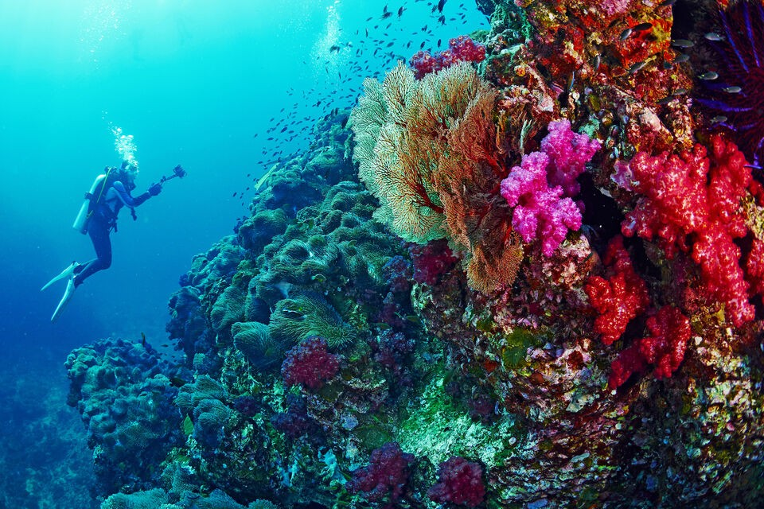
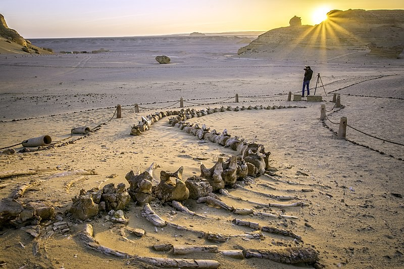
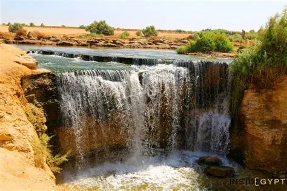

Egypt Ecotravels
"Eco-Adventures in the Land of the Pharaohs."
Ras Muhammad
Siwa Oasis

Ras Mohammed, in South Sinai about 12 km from Sharm El-Sheikh, is a nature reserve established in 1938. It boasts rich biodiversity with coral reefs, colorful fish, endangered sea turtles, and species like the Nubian ibex. Overlooking the Gulfs of Aqaba and Suez, it’s one of Egypt’s top destinations for diving and swimming.
A serene desert oasis famous for its salt lakes, date palms, and mud-brick architecture. Stay in sustainable eco-lodges built from local materials and explore natural springs like Cleopatra's Bath.
Wadi Al-Hitan (Whale Valley)
Fayoum & Wadi El Rayan
 A UNESCO World Heritage site near Fayoum, famed for its fossilized whale skeletons dating back 40 million years, a unique eco-educational site.
Just a few hours from Cairo, this area features waterfalls, interconnected lakes, migratory birdwatching, and eco-lodges dedicated to waste management and biodiversity conservation. Tunis Village nearby offers pottery workshops in an eco-friendly artisan community.